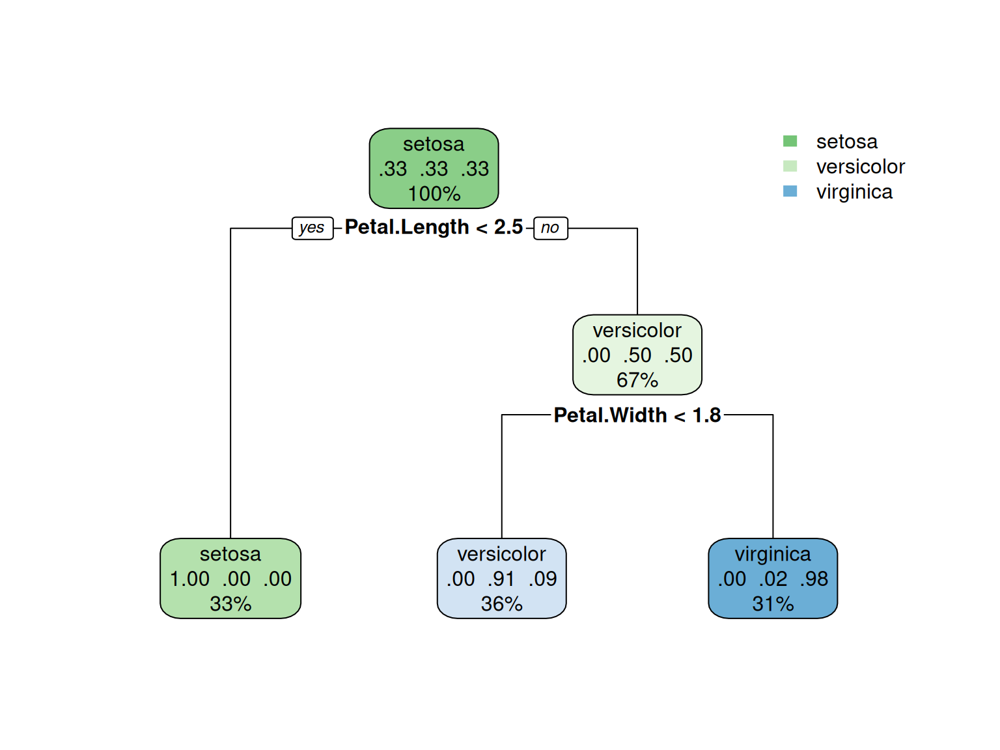
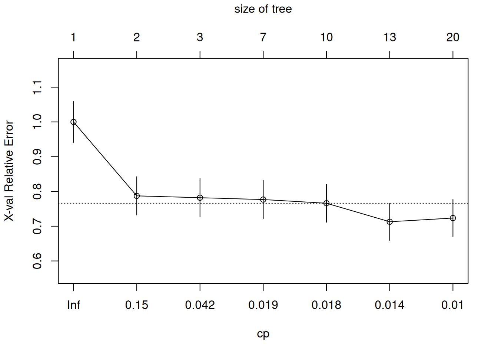
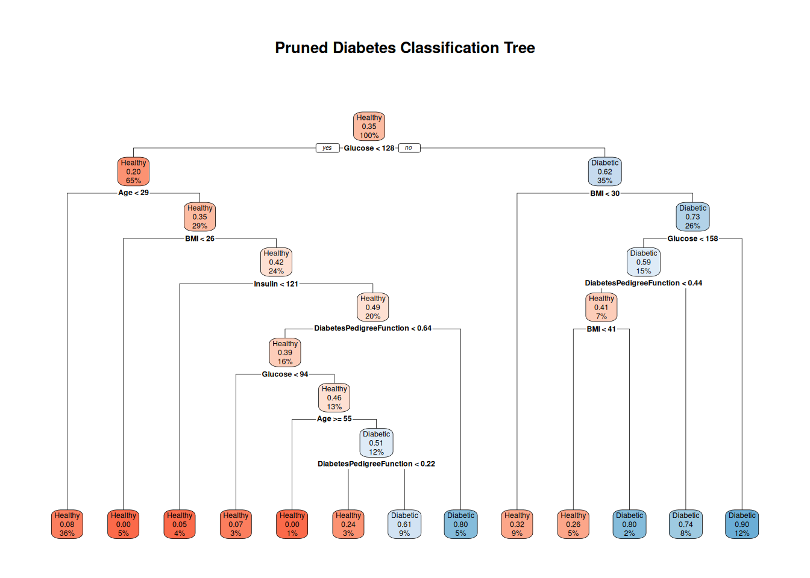
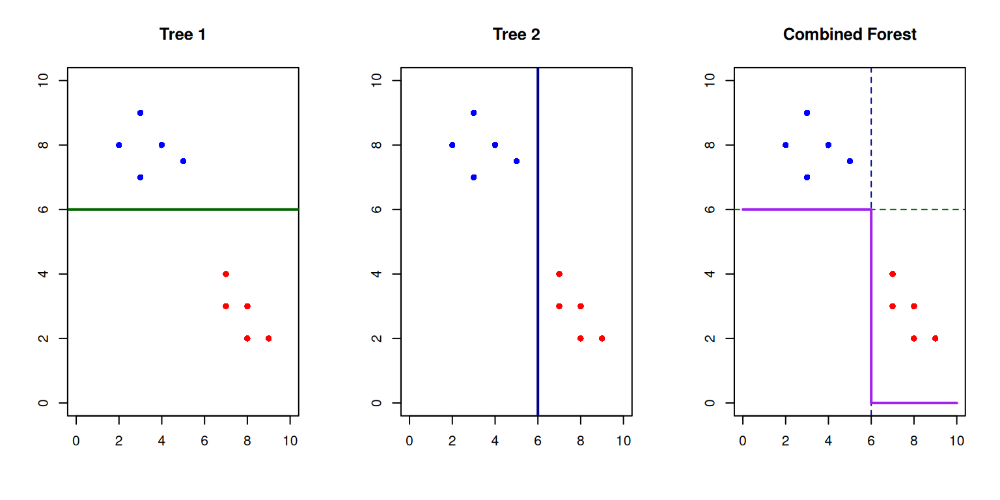
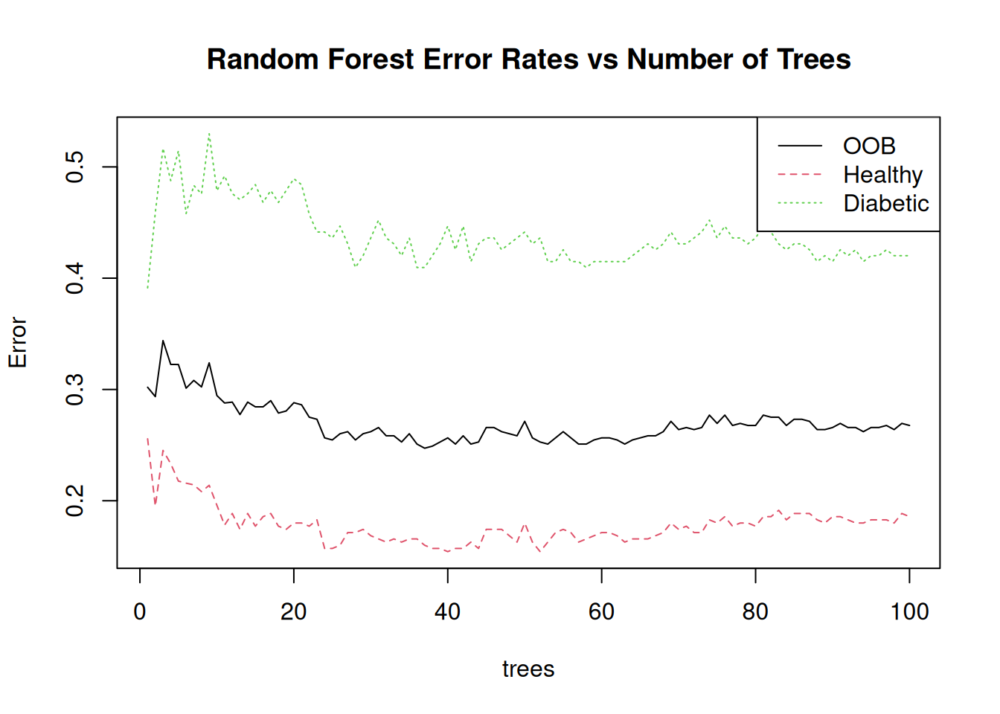
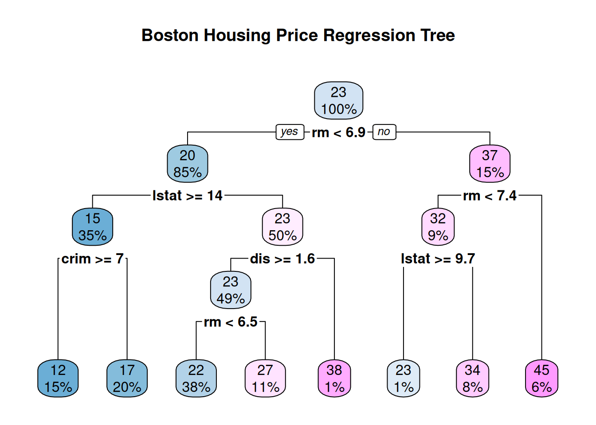

# Install necessary packages if not already installed
if(!require(tidyverse)) install.packages("tidyverse")
if(!require(rpart)) install.packages("rpart")
if(!require(rpart.plot)) install.packages("rpart.plot") # Install rpart.plot
if(!require(caret)) install.packages("caret")
if(!require(randomForest)) install.packages("randomForest")
if(!require(DiagrammeR)) install.packages("DiagrammeR")
# Load the libraries
library(tidyverse)
library(rpart)
library(rpart.plot) # Load rpart.plot
library(caret)
library(randomForest)
library(DiagrammeR) # Load DiagrammeRDecision Trees
Lecture 12
2025-04-17
Introduction to Decision Trees
Prerequisites
- This lecture will focus on Decision Trees and introduce Random Forests, powerful techniques for classification and regression tasks.
- We’ll use the
rpartpackage for decision trees and therandomForestpackage for random forests.
What are Decision Trees?
Decision Trees: An Intuitive Approach
Decision trees are a widely-used and intuitive machine learning technique used to solve prediction problems. They work through a series of yes-no questions to arrive at an outcome.
Some of the conceptual explanation here is inspired by Shaw Talebi’s excellent work on decision trees. For a Python-oriented approach, see his blog post.
A Simple Example
Imagine deciding whether to drink tea or coffee based on: - Time of day - Hours of sleep from last night

Simple decision tree example
Decision Tree Structure
A decision tree consists of:
- Root Node: The initial splitting point (Is it after 4 PM?)
- Internal/Splitting Nodes: Further split data based on conditions (Hours of sleep > 6?)
- Leaf/Terminal Nodes: Final outcome where no further splits occur (Tea 🍵 or Coffee ☕)
- Edges: Connect nodes and represent decision paths (Yes/No)
Using Decision Trees with Data
In practice, we use tabular data where each row is evaluated through the tree:

Tabular data example
Graphical View of a Decision Tree
Decision trees partition the feature space into regions:

Graphical view of decision tree partitioning
How to Grow a Decision Tree
Training Decision Trees from Data
Decision trees are grown using an optimization process:
- Starting Point: Begin with all data in a single node
- Greedy Search: Find the “best” variable and splitting point
- Recursive Splitting: Repeat the process on each resulting partition
- Stopping: Continue until a stopping criterion is met
Split Criteria
Decision trees use various metrics to determine the best split:
- Classification Trees:
- Gini impurity (default in many implementations)
- Information gain / Entropy reduction
- Regression Trees:
- Mean Squared Error (MSE)
- Mean Absolute Error (MAE)
Overfitting in Decision Trees
A fully grown tree might perfectly classify training data but perform poorly on new data:

Comparison of simple vs. complex decision boundaries
Controlling Tree Growth
To prevent overfitting, we can use:
- Hyperparameter Tuning:
- Maximum tree depth
- Minimum samples per leaf
- Minimum samples for split
- Pruning:
- Grow a full tree, then remove branches that don’t improve performance
- Cost-complexity pruning
Decision Trees in R
The rpart Package
R has excellent support for decision trees through the rpart package:
Building a Simple Decision Tree
n= 150
node), split, n, loss, yval, (yprob)
* denotes terminal node
1) root 150 100 setosa (0.33333333 0.33333333 0.33333333)
2) Petal.Length< 2.45 50 0 setosa (1.00000000 0.00000000 0.00000000) *
3) Petal.Length>=2.45 100 50 versicolor (0.00000000 0.50000000 0.50000000)
6) Petal.Width< 1.75 54 5 versicolor (0.00000000 0.90740741 0.09259259) *
7) Petal.Width>=1.75 46 1 virginica (0.00000000 0.02173913 0.97826087) *Visualizing the Decision Tree
Interpreting the Tree
- At each node, we see:
- The predicted class
- The probability distribution
- The percentage of observations
- The splitting criterion
- For the iris dataset:
- The first split is on Petal.Length < 2.5
- This perfectly separates setosa from the other species
- The second split uses Petal.Width to separate versicolor and virginica
Practical Example: Diabetes Prediction
Diabetes Dataset
Let’s use the Pima Indians Diabetes Dataset to predict diabetes risk:
# Load diabetes data
diabetes_data <- read.csv("https://raw.githubusercontent.com/jbrownlee/Datasets/master/pima-indians-diabetes.csv", header = FALSE)
# Set column names
colnames(diabetes_data) <- c("Pregnancies", "Glucose", "BloodPressure", "SkinThickness",
"Insulin", "BMI", "DiabetesPedigreeFunction", "Age", "Outcome")
# Check the data
glimpse(diabetes_data)Rows: 768
Columns: 9
$ Pregnancies <int> 6, 1, 8, 1, 0, 5, 3, 10, 2, 8, 4, 10, 10, 1, …
$ Glucose <int> 148, 85, 183, 89, 137, 116, 78, 115, 197, 125…
$ BloodPressure <int> 72, 66, 64, 66, 40, 74, 50, 0, 70, 96, 92, 74…
$ SkinThickness <int> 35, 29, 0, 23, 35, 0, 32, 0, 45, 0, 0, 0, 0, …
$ Insulin <int> 0, 0, 0, 94, 168, 0, 88, 0, 543, 0, 0, 0, 0, …
$ BMI <dbl> 33.6, 26.6, 23.3, 28.1, 43.1, 25.6, 31.0, 35.…
$ DiabetesPedigreeFunction <dbl> 0.627, 0.351, 0.672, 0.167, 2.288, 0.201, 0.2…
$ Age <int> 50, 31, 32, 21, 33, 30, 26, 29, 53, 54, 30, 3…
$ Outcome <int> 1, 0, 1, 0, 1, 0, 1, 0, 1, 1, 0, 1, 0, 1, 1, …Understanding the Dataset
The dataset contains information about females of Pima Indian heritage with the following variables:
- Pregnancies: Number of pregnancies
- Glucose: Plasma glucose concentration (2 hours after oral glucose tolerance test)
- BloodPressure: Diastolic blood pressure (mm Hg)
- SkinThickness: Triceps skin fold thickness (mm)
- Insulin: 2-Hour serum insulin (mu U/ml)
- BMI: Body mass index (weight in kg/(height in m)^2)
- DiabetesPedigreeFunction: A function of diabetes family history
- Age: Age in years
- Outcome: Class variable (0 = no diabetes, 1 = diabetes)
Preprocessing the Data
# Convert target to factor for classification
diabetes_data$Outcome <- as.factor(diabetes_data$Outcome)
# Recode target for interpretability
levels(diabetes_data$Outcome) <- c("Healthy", "Diabetic")
# Handle missing values (zeros are unlikely values for many of these measurements)
diabetes_data$Glucose[diabetes_data$Glucose == 0] <- NA
diabetes_data$BloodPressure[diabetes_data$BloodPressure == 0] <- NA
diabetes_data$SkinThickness[diabetes_data$SkinThickness == 0] <- NA
diabetes_data$Insulin[diabetes_data$Insulin == 0] <- NA
diabetes_data$BMI[diabetes_data$BMI == 0] <- NA
# Impute missing values with median
for(i in 1:5) {
diabetes_data[is.na(diabetes_data[,i+1]), i+1] <- median(diabetes_data[,i+1], na.rm = TRUE)
}
# Check class balance
table(diabetes_data$Outcome)
Healthy Diabetic
500 268 Data Preparation
Healthy Diabetic
0.6505576 0.3494424 Training the Model
# Train a decision tree model
diabetes_tree <- rpart(Outcome ~ .,
data = train_data,
method = "class",
control = rpart.control(cp = 0.01)) # complexity parameter
# View the result
rpart.plot(diabetes_tree,
extra = 106,
box.palette = "RdBu",
fallen.leaves = TRUE,
main = "Diabetes Classification Decision Tree")Evaluating the Model
Confusion Matrix and Statistics
Reference
Prediction Healthy Diabetic
Healthy 134 35
Diabetic 16 45
Accuracy : 0.7783
95% CI : (0.719, 0.8302)
No Information Rate : 0.6522
P-Value [Acc > NIR] : 2.232e-05
Kappa : 0.4826
Mcnemar's Test P-Value : 0.01172
Sensitivity : 0.8933
Specificity : 0.5625
Pos Pred Value : 0.7929
Neg Pred Value : 0.7377
Prevalence : 0.6522
Detection Rate : 0.5826
Detection Prevalence : 0.7348
Balanced Accuracy : 0.7279
'Positive' Class : Healthy
Feature Importance
# Extract variable importance
var_importance <- diabetes_tree$variable.importance
var_importance_df <- data.frame(
Variable = names(var_importance),
Importance = var_importance
)
# Plot variable importance
ggplot(var_importance_df, aes(x = reorder(Variable, Importance), y = Importance)) +
geom_bar(stat = "identity", fill = "steelblue") +
coord_flip() +
labs(x = "Variables", y = "Importance",
title = "Variable Importance in Diabetes Prediction") +
theme_minimal()Hyperparameter Tuning
We can tune the complexity parameter (cp) to control tree growth:

Optimal CP value: 0.0106383 
Model Comparison
# Evaluate pruned model
pruned_predictions <- predict(pruned_tree, test_data, type = "class")
pruned_conf_matrix <- confusionMatrix(pruned_predictions, test_data$Outcome)
# Compare metrics
metrics_comparison <- data.frame(
Model = c("Full Tree", "Pruned Tree"),
Accuracy = c(conf_matrix$overall["Accuracy"],
pruned_conf_matrix$overall["Accuracy"]),
Sensitivity = c(conf_matrix$byClass["Sensitivity"],
pruned_conf_matrix$byClass["Sensitivity"]),
Specificity = c(conf_matrix$byClass["Specificity"],
pruned_conf_matrix$byClass["Specificity"])
)
metrics_comparison Model Accuracy Sensitivity Specificity
1 Full Tree 0.7782609 0.8933333 0.5625
2 Pruned Tree 0.7913043 0.8933333 0.6000Advantages & Limitations
Advantages of Decision Trees
- Interpretability: Easy to understand and visualize
- No scaling required: Doesn’t require feature normalization
- Handles mixed data types: Can process numerical and categorical variables
- Captures non-linear relationships: Can model complex decision boundaries
- Feature importance: Naturally reveals important variables
Limitations of Decision Trees
- Overfitting: Prone to capturing noise in training data
- Instability: Small changes in data can result in very different trees
- Bias toward variables with many levels: Can favor categorical variables with many categories
- Suboptimal global decisions: Greedy approach may not find globally optimal tree
- Limited prediction smoothness: Step-wise predictions rather than smooth functions
Introduction to Random Forests
Ensemble Learning
Random Forests overcome many limitations of single decision trees through:
- Bootstrap Aggregation (Bagging): Training many trees on random subsets of data
- Feature Randomization: Considering only a subset of features at each split
- Voting/Averaging: Combining predictions from all trees


Random Forest Implementation
Call:
randomForest(formula = Outcome ~ ., data = train_data, ntree = 100, mtry = sqrt(ncol(train_data) - 1))
Type of random forest: classification
Number of trees: 100
No. of variables tried at each split: 3
OOB estimate of error rate: 26.77%
Confusion matrix:
Healthy Diabetic class.error
Healthy 285 65 0.1857143
Diabetic 79 109 0.4202128Random Forest Performance
# Make predictions
rf_predictions <- predict(diabetes_rf, test_data)
rf_conf_matrix <- confusionMatrix(rf_predictions, test_data$Outcome)
# Add to comparison
metrics_comparison <- rbind(metrics_comparison,
data.frame(
Model = "Random Forest",
Accuracy = rf_conf_matrix$overall["Accuracy"],
Sensitivity = rf_conf_matrix$byClass["Sensitivity"],
Specificity = rf_conf_matrix$byClass["Specificity"]
))
metrics_comparison Model Accuracy Sensitivity Specificity
1 Full Tree 0.7782609 0.8933333 0.5625
2 Pruned Tree 0.7913043 0.8933333 0.6000
Accuracy Random Forest 0.7608696 0.8533333 0.5875Out-of-Bag Error Estimation
One unique advantage of Random Forests is out-of-bag (OOB) error estimation:
Advanced Topics
Tree Ensembles Beyond Random Forests
Other tree-based ensemble methods include:
- Gradient Boosting: Builds trees sequentially, each correcting errors of previous trees
- XGBoost, LightGBM, CatBoost
- AdaBoost: Boosts performance by giving higher weight to misclassified instances
- Extremely Randomized Trees: Adds additional randomization in splitting
Regression Trees
Decision trees can also be used for regression problems:
Conclusion
Summary
- Decision trees provide an intuitive approach to classification and regression
- They work by recursively partitioning data based on feature values
- Controlling tree growth is crucial to prevent overfitting
- Random forests improve performance by combining many trees
- Both algorithms provide interpretable models with built-in feature importance
Key Takeaways
- Decision trees are excellent for initial modeling and understanding data
- Hyperparameter tuning and pruning help prevent overfitting
- Random forests generally outperform single decision trees
- Consider the tradeoff between interpretability and performance
- These techniques work well across many domains and data types
References
- Talebi, S. (2023). “Decision Trees: Introduction & Intuition”. Medium
- Breiman, L., Friedman, J., Stone, C.J., & Olshen, R.A. (1984). “Classification and Regression Trees”
- Breiman, L. (2001). “Random Forests”. Machine Learning, 45(1), 5-32
- James, G., Witten, D., Hastie, T., & Tibshirani, R. (2013). “An Introduction to Statistical Learning”
- Smith, J.W., Everhart, J.E., Dickson, W.C., Knowler, W.C., & Johannes, R.S. (1988). “Using the ADAP learning algorithm to forecast the onset of diabetes mellitus”
- Normalized Nerd. (2022). “Random Forest Algorithm Clearly Explained!”. (https://www.youtube.com/watch?v=v6VJ2RO66Ag&ab_channel=NormalizedNerd)
Thank You!
Questions?
Feel free to reach out with any questions about decision trees or random forests!
R version 4.4.0 (2024-04-24)
Platform: x86_64-pc-linux-gnu
Running under: Ubuntu 24.04.3 LTS
Matrix products: default
BLAS: /usr/lib/x86_64-linux-gnu/openblas-pthread/libblas.so.3
LAPACK: /usr/lib/x86_64-linux-gnu/openblas-pthread/libopenblasp-r0.3.26.so; LAPACK version 3.12.0
locale:
[1] LC_CTYPE=C.UTF-8 LC_NUMERIC=C LC_TIME=C.UTF-8
[4] LC_COLLATE=C.UTF-8 LC_MONETARY=C.UTF-8 LC_MESSAGES=C.UTF-8
[7] LC_PAPER=C.UTF-8 LC_NAME=C LC_ADDRESS=C
[10] LC_TELEPHONE=C LC_MEASUREMENT=C.UTF-8 LC_IDENTIFICATION=C
time zone: UTC
tzcode source: system (glibc)
attached base packages:
[1] stats graphics grDevices datasets utils methods base
other attached packages:
[1] DiagrammeR_1.0.11 randomForest_4.7-1.2 caret_7.0-1
[4] lattice_0.22-6 rpart.plot_3.1.2 rpart_4.1.23
[7] lubridate_1.9.4 forcats_1.0.0 stringr_1.5.1
[10] dplyr_1.1.4 purrr_1.0.4 readr_2.1.5
[13] tidyr_1.3.1 tibble_3.2.1 ggplot2_3.5.1
[16] tidyverse_2.0.0
loaded via a namespace (and not attached):
[1] tidyselect_1.2.1 timeDate_4041.110 farver_2.1.2
[4] fastmap_1.2.0 pROC_1.18.5 digest_0.6.36
[7] timechange_0.3.0 lifecycle_1.0.4 survival_3.5-8
[10] magrittr_2.0.3 compiler_4.4.0 rlang_1.1.6
[13] tools_4.4.0 yaml_2.3.9 data.table_1.17.0
[16] knitr_1.48 labeling_0.4.3 htmlwidgets_1.6.4
[19] plyr_1.8.9 RColorBrewer_1.1-3 withr_3.0.2
[22] nnet_7.3-19 grid_4.4.0 stats4_4.4.0
[25] e1071_1.7-16 colorspace_2.1-1 future_1.34.0
[28] globals_0.16.3 scales_1.3.0 iterators_1.0.14
[31] MASS_7.3-60.2 cli_3.6.4 rmarkdown_2.27
[34] generics_0.1.3 future.apply_1.11.3 reshape2_1.4.4
[37] tzdb_0.5.0 visNetwork_2.1.2 proxy_0.4-27
[40] splines_4.4.0 parallel_4.4.0 vctrs_0.6.5
[43] hardhat_1.4.1 Matrix_1.7-0 jsonlite_1.8.8
[46] hms_1.1.3 listenv_0.9.1 foreach_1.5.2
[49] gower_1.0.2 recipes_1.2.0 glue_1.7.0
[52] parallelly_1.43.0 codetools_0.2-20 stringi_1.8.4
[55] gtable_0.3.6 munsell_0.5.1 pillar_1.10.1
[58] htmltools_0.5.8.1 ipred_0.9-15 lava_1.8.1
[61] R6_2.5.1 evaluate_0.24.0 renv_1.1.4
[64] class_7.3-22 Rcpp_1.0.14 nlme_3.1-164
[67] prodlim_2024.06.25 xfun_0.45 pkgconfig_2.0.3
[70] ModelMetrics_1.2.2.2